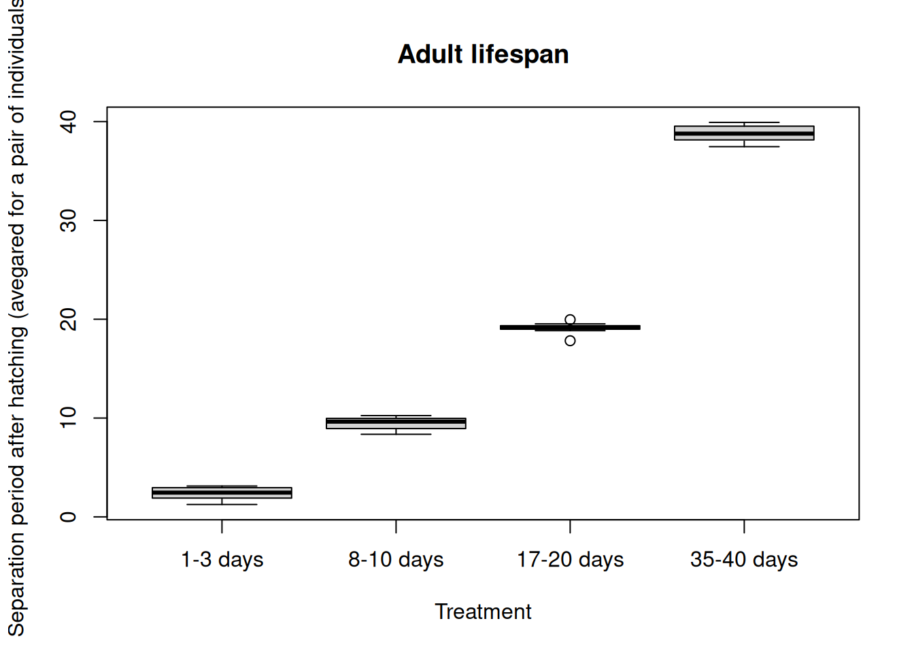

Chapter 7 Impact of slave on the development of the F. sanguinea CHC profile
Now we are going to analyze the impact of F. fusca slaves on the CHC profile of the callow F. sanguinea ants. In the experiment, F. sanguinea ants were isolated in pairs before hatching and their CHC profile was analysed at one of the four fixed points of adult life. We want to see whether the callow F. sanguinea ants are more similar to slave relatives from free-living colony as compared to F. fusca ants unrelated at all.
7.1 Analysis based on all samples
# Load package
library(sangchem)
# Load data
data("separation_experiment_data")
data("slave_source_colony")
data("colony_to_chrID")
# Exclude colonies for which we don't have free-living F. fusca CHC profile
separation_data <- separation_experiment_data[!is.na(colony_to_chrID[slave_source_colony[separation_experiment_data$colony]]),]
# See the lifespan of the workers depending on the treatment
plot_data <- separation_data[separation_data$treatment_id %in% 1:4,]
plot_data$treatment <- factor(plot_data$treatment, levels = c("1-3 days", "8-10 days", "17-20 days", "35-40 days"))
boxplot(plot_data$mean_delta~plot_data$treatment, main = "Adult lifespan", xlab = "Treatment", ylab = "Separation period after hatching (avegared for a pair of individuals)")
# Calculate emprical p-value for the treatment 1
set.seed(10101)
res_1 <- distances_permutation_test(treatment_id = 1)## [1] 0sprintf("Number of colonies: %d", length(unique(separation_data[separation_data$treatment_id==1, "colony"])))## [1] "Number of colonies: 9"# Calculate emprical p-value for the treatment 2
res_2 <- distances_permutation_test(treatment_id = 2)## [1] 0sprintf("Number of colonies: %d", length(unique(separation_data[separation_data$treatment_id==2, "colony"])))## [1] "Number of colonies: 9"# Calculate emprical p-value for the treatment 3
res_3 <- distances_permutation_test(treatment_id = 3)## [1] 0.00103999sprintf("Number of colonies: %d", length(unique(separation_data[separation_data$treatment_id==3, "colony"])))## [1] "Number of colonies: 9"# Calculate emprical p-value for the treatment 3
res_4 <- distances_permutation_test(treatment_id = 4)## [1] 0.007899921sprintf("Number of colonies: %d", length(unique(separation_data[separation_data$treatment_id==4, "colony"])))## [1] "Number of colonies: 8"print(data.frame(treatment_id=1:4, chemical_distance_to_slave_relatives=c(res_1[[2]], res_2[[2]],
res_3[[2]], res_4[[2]]),
chemical_distance_to_random_colonies=vapply(list(res_1[[3]], res_2[[3]],
res_3[[3]], res_4[[3]]), mean,
FUN.VALUE=numeric(1))))## treatment_id chemical_distance_to_slave_relatives chemical_distance_to_random_colonies
## 1 1 0.3424769 0.4797216
## 2 2 0.3606382 0.4894156
## 3 3 0.4635844 0.5370807
## 4 4 0.5773342 0.61497817.2 Analysis restricted to the individuals hatched from cocoons
Since naked pupae might have acquired CHCs through physical contact with adult ants after pupation, we will subset out data to include only these samples which come from the ants hatched from cocoons. In this case silky envelop during pupa stage ruled out possibility of CHC transfer from the environment.
separation_data <- separation_data[as.numeric(separation_data$cocoon_1)==1&as.numeric(separation_data$cocoon_2)==1,]set.seed(10101)
# Calculate emprical p-value for the treatment 1
res_1 <- distances_permutation_test(treatment_id=1, exclude_naked_pupae=TRUE)## [1] 0sprintf("Number of colonies: %d", length(unique(separation_data[separation_data$treatment_id==1, "colony"])))## [1] "Number of colonies: 8"# Calculate emprical p-value for the treatment 2
res_2 <- distances_permutation_test(treatment_id=2, exclude_naked_pupae=TRUE)## [1] 9.9999e-06sprintf("Number of colonies: %d", length(unique(separation_data[separation_data$treatment_id==2, "colony"])))## [1] "Number of colonies: 8"# Calculate emprical p-value for the treatment 3
res_3 <- distances_permutation_test(treatment_id=3, exclude_naked_pupae=TRUE)## [1] 0.005139949sprintf("Number of colonies: %d", length(unique(separation_data[separation_data$treatment_id==3, "colony"])))## [1] "Number of colonies: 8"# Calculate emprical p-value for the treatment 3
res_4 <- distances_permutation_test(treatment_id=4, exclude_naked_pupae=TRUE)## [1] 0.03803962sprintf("Number of colonies: %d", length(unique(separation_data[separation_data$treatment_id==4, "colony"])))## [1] "Number of colonies: 7"print(data.frame(treatment_id=1:4, chemical_distance_to_slave_relatives=c(res_1[[2]], res_2[[2]],
res_3[[2]], res_4[[2]]),
chemical_distance_to_random_colonies=vapply(list(res_1[[3]], res_2[[3]],
res_3[[3]], res_4[[3]]), mean,
FUN.VALUE=numeric(1))))## treatment_id chemical_distance_to_slave_relatives chemical_distance_to_random_colonies
## 1 1 0.3573031 0.4955207
## 2 2 0.3843412 0.5036721
## 3 3 0.4758548 0.5490103
## 4 4 0.6218406 0.6505040